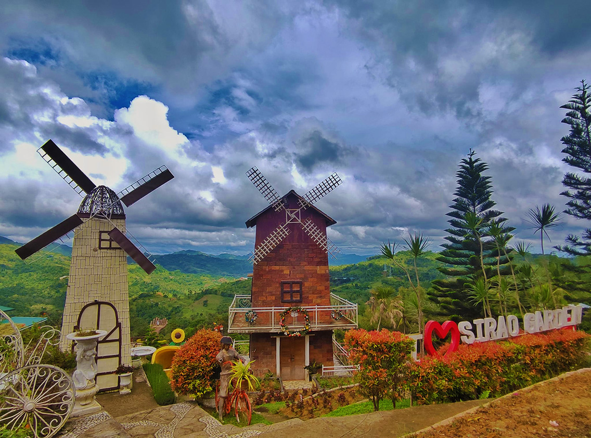
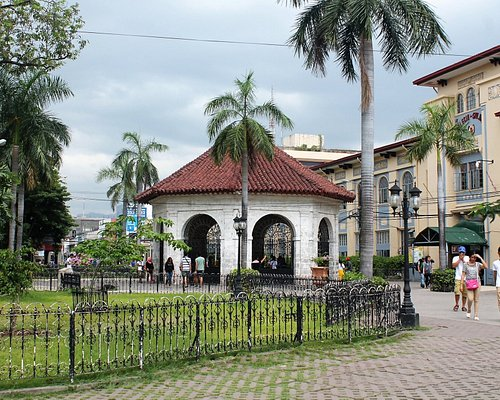
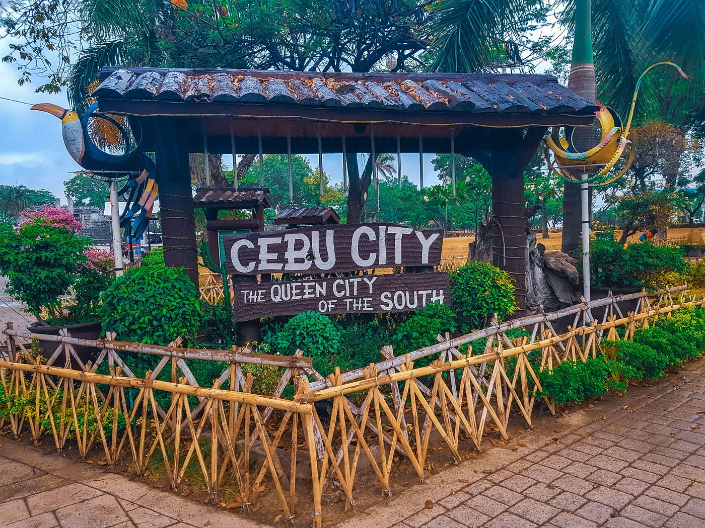
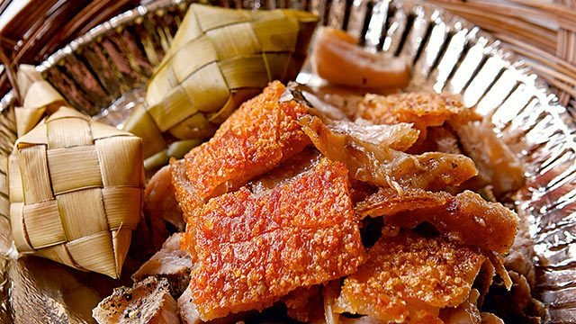
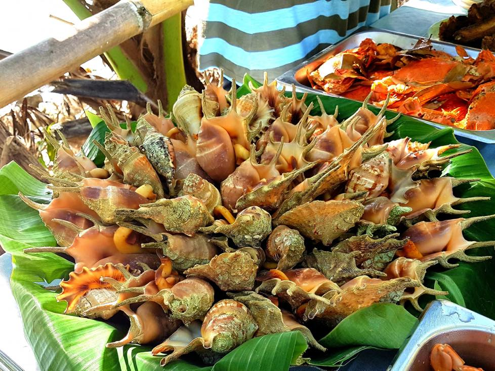
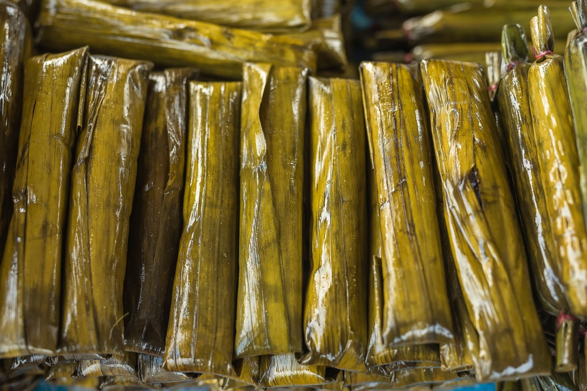
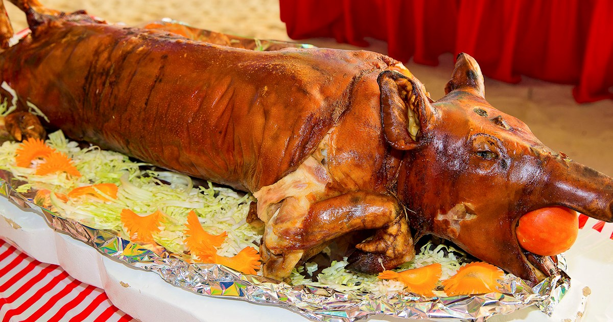
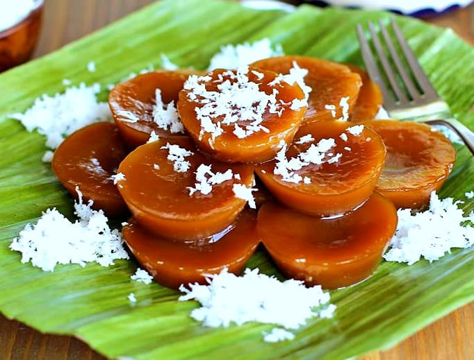
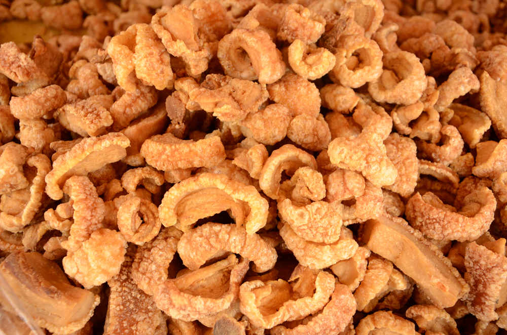

Why choose CEBU as a place for food to go?
Cebu is a food lover's paradise, with a diverse and delicious culinary scene that offers a wide range of dishes and delicacies that are unique to the province and is located in the Visayas region of the Philippines.
Cebu is an excellent destination for food lovers due to its diverse and delicious culinary scene. The province is known for its barbecue, lechon (roast suckling pig), and seafood, which are must-try dishes when visiting the city. There are also many local adaptations of traditional Filipino dishes, such as the sweet and grilled Chorizo de Cebu.
In addition, Cebu has its own version of longganisa, a Filipino sausage, which is bite-sized, grilled, and on the sweet side. The city is also known for its dried fish, particularly danggit, which is a small, sun-dried, salted rabbitfish.
Cebu has its unique dishes such as linarang or nilarang, a fish stew that is truly Central Visayan, and ngohiong, a popular street food that is a distant relative of the spring roll.
Cebu also boasts of its pochero, a bone-in beef shank soup that is similar to bulalo, a popular soup in the Southern Tagalog region. Lastly, Pungko-Pungko, a food stall offering deep-fried goodies, is an experience that one should not miss when visiting Cebu.
Overall, Cebu's rich culinary scene, diverse food offerings, and unique dishes make it an excellent place for food lovers to explore and enjoy.
Cebu offers popular diving spots, thrilling eco-adventures, extreme sports, white-sand beaches, Instagram-worthy festivals, state-of-the-art shopping and an exciting nightlife scene.
Cebu is also a food mecca where visitors can taste some of the greatest Philippine cuisines.Cebu is famous for its unique and flavorful food offerings. Cebuanos tend to prefer their food grilled, fried, or with clear sauces, and they often use ginger in many of their dishes.










☰